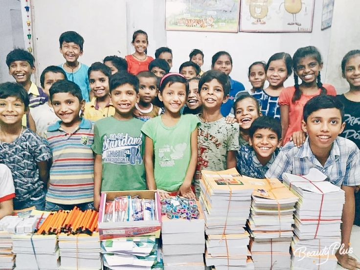

Transformar a realidade de milhares de crianças e garantir que elas tenham acesso à educação e a um futuro com mais oportunidades só é possível com a sua ajuda. Existem diferentes formas de fazer parte da nossa rede de apoio:
Garante um kit completo com cadernos, lápis, estojo e itens essenciais para que uma criança comece o ano letivo sem faltar recursos.
Custeia as horas de tutoria gratuita e reforço escolar no contraturno para manter o aluno motivado e focado.
Contribui para a manutenção de computadores, acesso à internet e oficinas de tecnologia nas salas de aula.
Material escolar novo ou em ótimo estado: Mochilas, cadernos, lápis de cor, canetas e estojos.
Equipamentos de informática: Computadores, notebooks e tablets em bom estado de funcionamento para equipar nossas salas de tecnologia.

Tutoria e Reforço: Dedique algumas horas da sua semana para ajudar crianças e adolescentes com os deveres escolares e reforço pedagógico.
Oficinas de Tecnologia: Compartilhe seus conhecimentos em informática básica, programação ou design com os nossos alunos.
Escolha a forma que melhor se conecta com você e venha construir esse futuro ao nosso lado!